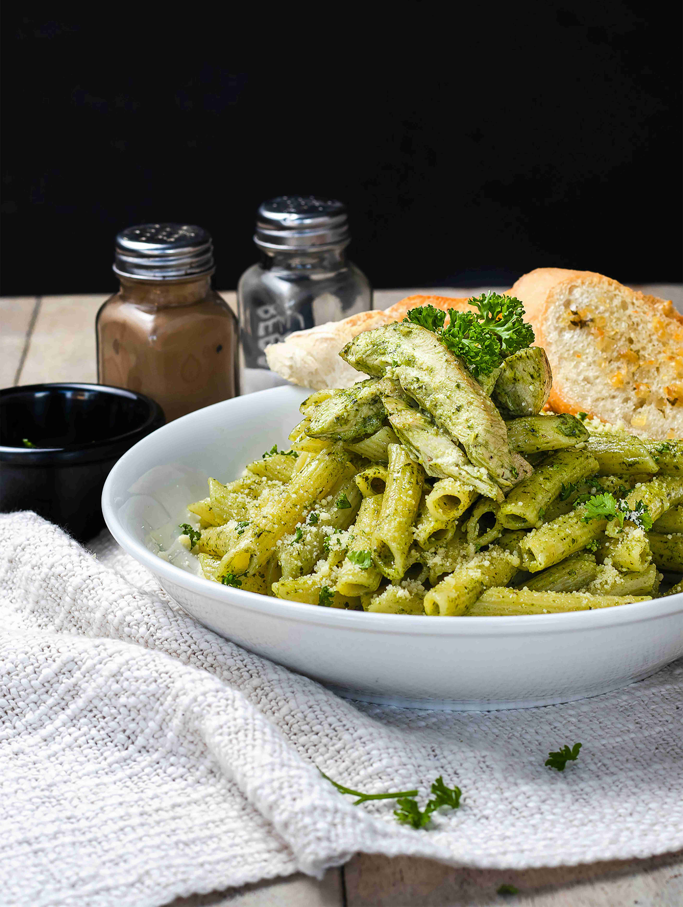

Quando si parla di eccellenze italiane, la pasta al pesto conquista senza dubbio un posto d’onore. Profumata, colorata e ricca di gusto, la pasta con il pesto alla genovese è un simbolo della cucina ligure.
Basilico, olio, aglio e formaggio i suoi capisaldi: pochi e classici ingredienti, per un vero inno alla semplicità dal gusto irresistibile.